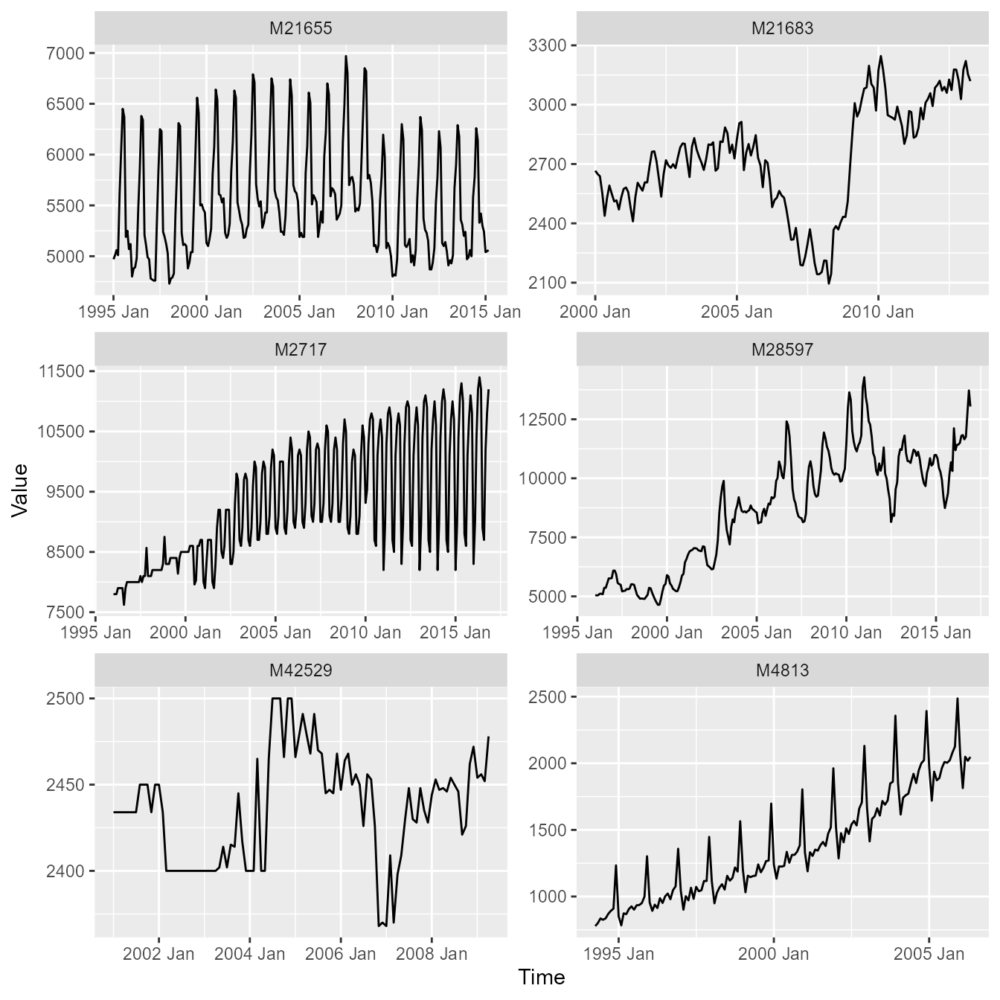

Introduction
This vignette gives you a quick tour of the time series
datasets embedded in echos:
-
m4_data: Six monthly time series drawn from the well‑known M4 Forecasting Competition. -
synthetic_data: Ten synthetic time series, useful for teaching, prototyping and testing.
M4 data
The dataset m4_data is a tsibble with six
monthly time series from the M4 Forecasting Competition. The datasets
contains the following time series:
- M21655 (Demographic), 1995 Jan - 2015 Mar
- M21683 (Demographic), 2000 Jan - 2023 Apr
- M2717 (Macro), 1996 Jan - 2016 Nov
- M28597 (Industry), 1996 Jan - 2016 Dec
- M42529 (Finance), 2001 Jan - 2009 Apr
- M4813 (Macro), 1994 Apr - 2006 May
m4_data
#> # A tsibble: 1,152 x 4 [1M]
#> # Key: series [6]
#> series category index value
#> <chr> <fct> <mth> <dbl>
#> 1 M21655 Demographic 1995 Jan 4970
#> 2 M21655 Demographic 1995 Feb 5010
#> 3 M21655 Demographic 1995 Mrz 5060
#> 4 M21655 Demographic 1995 Apr 5010
#> 5 M21655 Demographic 1995 Mai 5610
#> 6 M21655 Demographic 1995 Jun 6040
#> 7 M21655 Demographic 1995 Jul 6450
#> 8 M21655 Demographic 1995 Aug 6370
#> 9 M21655 Demographic 1995 Sep 5190
#> 10 M21655 Demographic 1995 Okt 5250
#> # ℹ 1,142 more rows
Synthetic data
The dataset synthetic_data is a tibble with
ten synthetic time series. The dataset contains the following time
series:
- Square Wave
- Sawtooth Wave
- Harmonic Wave
- Harmonic Wave w/ Trend
- Amplitude Modulated Wave
- Frequency Modulated Wave
- AR(1) Process
- MA(2) Process
- White Noise Process
- Random Walk Process
synthetic_data
#> # A tibble: 2,000 × 3
#> variable index value
#> <chr> <int> <dbl>
#> 1 Square Wave 1 1
#> 2 Square Wave 2 1
#> 3 Square Wave 3 1
#> 4 Square Wave 4 1
#> 5 Square Wave 5 1
#> 6 Square Wave 6 1
#> 7 Square Wave 7 1
#> 8 Square Wave 8 1
#> 9 Square Wave 9 1
#> 10 Square Wave 10 1
#> # ℹ 1,990 more rows